Batch 06: 13 new attempts, 7 already done
New drawings: 7 valid, 1 review, 5 invalid. AUTHOR: gpt-6. Review and invalid are not passes.
1. browser person - review
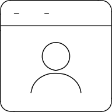
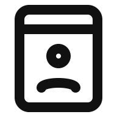
Circular head and open shoulders remain recognizable in both themes. Shoulders are shallower than the shared user reference to fit the enclosure. Exact head-to-shoulder ink gap is 4: head bottom 26, shoulder top 34, less two stroke half-widths. Footer clearance remains a numerical warning, not a pass.
SVG / Result
2. browser pound sign right - valid
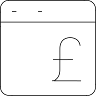
Pound hook, crossbar and foot are readable at 48px. Upright enclosure creates room for the symbol; right alignment is modest because of required side clearance. Smooth hook joins the stem vertically.
SVG / Result
3. browser pound sign - valid
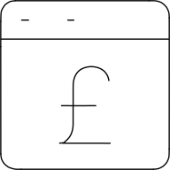
Centered pound reads cleanly in both themes. Upright browser and rounded hook retain the source composition, with decorative title marks omitted.
SVG / Result
4. browser with 18+ text - invalid
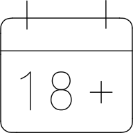
All 18+ characters remain, but the top loop of 8 closes at native size and adjacent glyph spacing is crowded. Retained as an unsuccessful complete-composition attempt.
SVG / Result
5. browser yuan sign right - valid
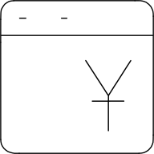
One-bar yuan remains visible at native size; mirrored arms and deliberately right-shifted placement preserve the source arrangement.
SVG / Result
6. browser yuan sign - valid
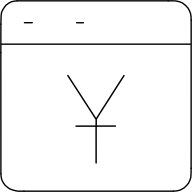
Centered one-bar yuan has balanced arms and margins. The original single crossbar is retained instead of importing a second Lucide yen bar.
SVG / Result
8. bubble message pm text - invalid
PM lettering and lower-left tail remain legible, but M is too close to the oval and P counter is undersized. Retained as an unsuccessful attempt; no content letter removed.
SVG / Result
9. bubble tea heart - valid
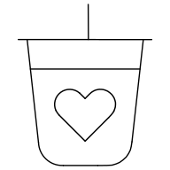
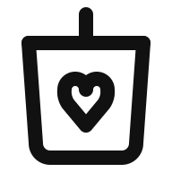
Cup, straw and heart remain recognizable in both themes. Slightly tapered walls and mirrored heart lobes provide clear margins; the secondary lid seam is omitted.
SVG / Result
15. calendar math - invalid
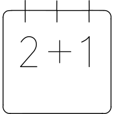
The complete 2+1 expression remains readable but numerals and plus have insufficient clearance to one another and to the calendar wall. Retained as an unsuccessful attempt.
SVG / Result
16. calendar number seven - valid
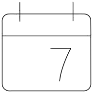
Seven is readable with generous lower margin. Rounded enclosure and matched bindings are balanced in both themes; numeral slant is intentional.
SVG / Result
17. calendar phone - invalid
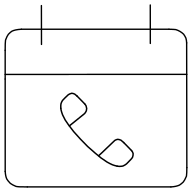
Handset is recognizable but its closed handle contour crowds the calendar bottom and its end openings are too small. Retained as an unsuccessful attempt.
SVG / Result
18. calendar pie - invalid
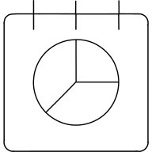
Three pie sectors and three bindings remain visible, but the circle crowds the calendar bottom. Shared radial endpoints are coherent; retained as an unsuccessful attempt.
SVG / Result
19. camera file - valid
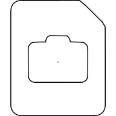
Clipped-corner document and raised-prism camera with lens point are clear at 48px. Wider square page leaves camera clearance while preserving the asymmetric corner.
SVG / Result